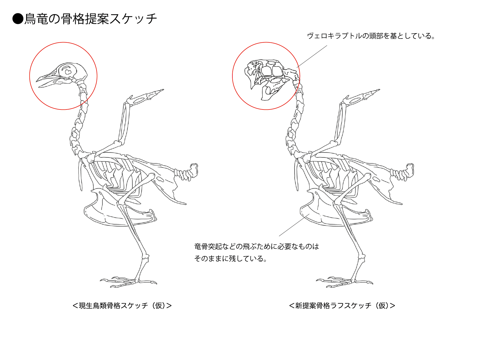
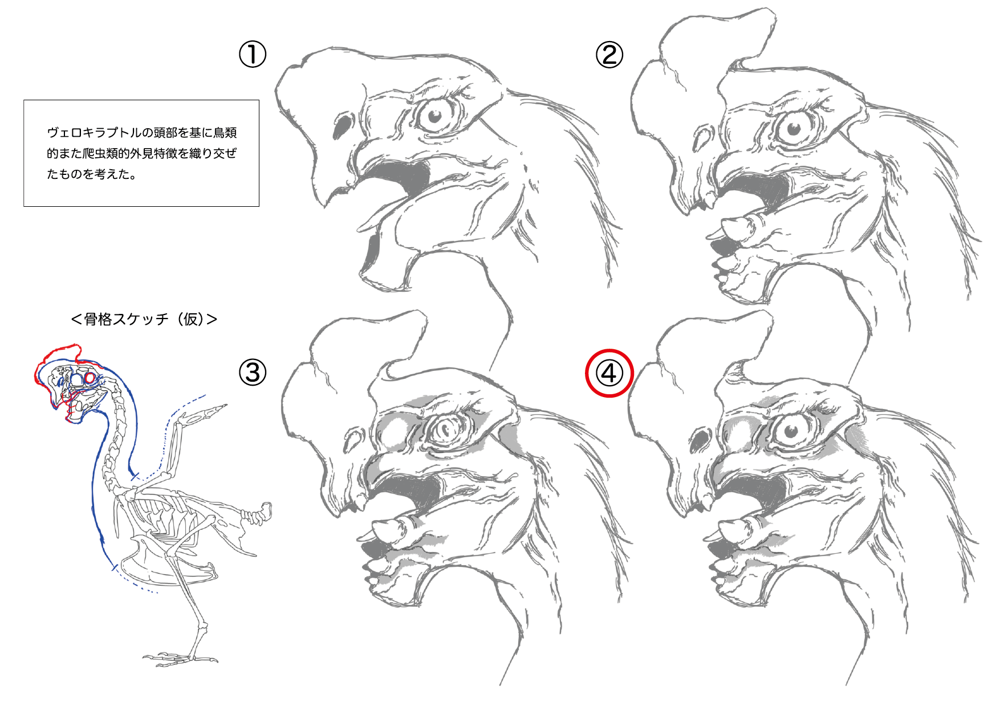

【 架鳥竜デザイン / Design of SkyBird Wyvern 】
［ デザインの工夫 ］
今回の架鳥竜は、新たに現生の鳥類を基にした骨格を作りました。 全体的に開放感のある生物として仕上げたいと考えたため、より現生の鳥類に近い姿勢や構造にしています。 かつ、今回は飛行時のシルエットを重視したものになっています。 最初に基となった骨格案は、頭部が現生の鳥類のものから鳥類への発展途上のイメージを持つ ヴェロキラプトルのものに置き換えたものになっており、現生の鳥類の印象を残しつつ竜の要素を持つより偉大な印象を持たせることを意識しました。
次に大まかな頭部周辺の骨格が決定したので、頭部のデザインについて案出しを行ないました 既存のヴェロキラプトルが基になりつつも、要所要所に鳥類的また爬虫類的特徴が見られるようなデザインを考えました。 かつ、より現生の鳥のような印象を持ってもらえるよう、目元には特に鳥のような印象を感じられるよう注意を払いました。 また、翼を広げた時と折りたたんでいる状態でのシルエットの差のようなものは、意識しています。 折りたたんでいる際には重厚感のようなものが感じられるものの、翼を広げた際には開放感のあるすっきりした姿になるように仕上げました。